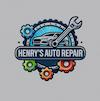

Henry's Auto Repair
References
- Brake service image courtesy of BrakeMax:
BrakeMax
- Suspension and steering image courtesy of Freepik:
Freepik
- Oil change image courtesy of DriversDrift:
DriversDrift
- Air conditioning service image courtesy of AutoOwls:
AutoOwls
- Tire repair image courtesy of Vecteezy:
Vecteezy
- Alternator repair image courtesy of Airtasker SEO Assets:
Airtasker
- “Auto mechanic working in garage repair service” image courtesy of PNGTree:
PNGTree
- Google Maps embed for company location:
Google Maps.
- Text content written by Henry Esteban for project purposes.